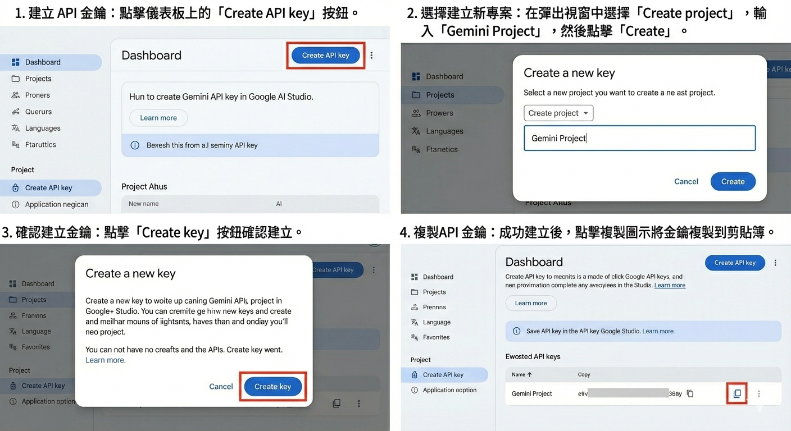

選擇聲音：
雲端：中文 曉臻 (女性)
雲端：中文 允哲 (男性)
雲端：中文 曉雨 (女性)
雲端：英文 Jenny (女性)
雲端：英文 Guy (男性)
雲端：英文 Aria (女性)
雲端：英文 Christ (男性)
本機：中文女音 (瀏覽器)
本機：英文女音 (瀏覽器)
語速加
0%
上一頁
下一頁
整頁朗讀
朗讀選取文字
清除選取文字
觸控選取
⚙️
報讀系統進階設定
一、API KEY 設定
？
API KEY：（用於AI圖片辨識與AI標記朗讀範圍）
📷 掃描 QR Code
停止掃描
儲存
刪除 API KEY
二、PDF 快取
清除 PDF 快取
三、PDF 標記功能（點選事先標記的範圍可直接發音）
標記區塊
保存標記
匯出PDF
清除標記
取消
如何取得 Gemini API KEY
第一步驟：先連線到
aistudio.google.com/u/2/api-keys
並登入你的 Google 帳號。
第二步驟：依照下方的教學圖片步驟建立並複製你的 API KEY。

（點擊圖片可放大檢視）
關閉
關閉
取消標記
手動標記
AI標記
設定密碼
保存標記
匯出PDF
清除標記